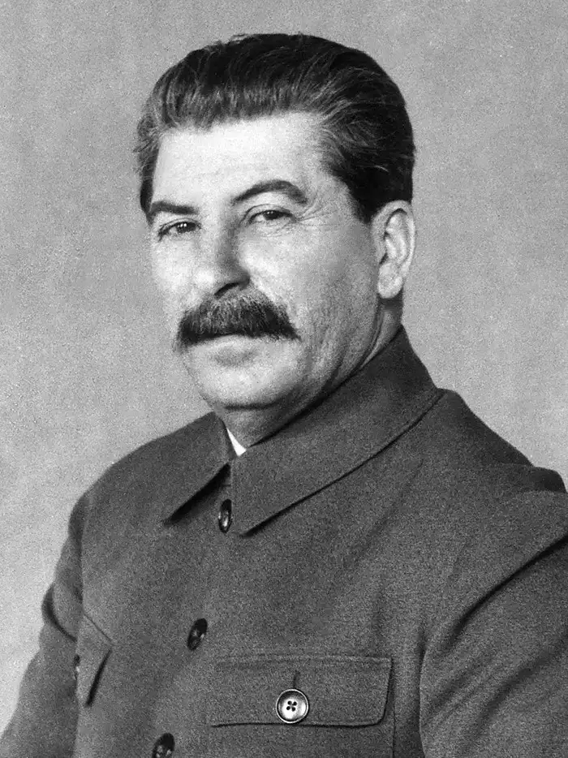

Joseph Vissarionovich Stalin
(18 December 1878 – 5 March 1953)
Joseph Vissarionovich Stalin (18 December 1878 – 5 March 1953) was the leader of the Soviet Union from the mid-1920s until his death in 1953. As General Secretary of the Communist Party, he consolidated power and established a centralized state under his leadership. Stalin oversaw rapid industrialization and the collectivization of agriculture, policies that significantly transformed the Soviet Union but also caused widespread hardship and famine. During World War II, he played a major role in leading the Soviet Union against Nazi Germany. His rule is associated with political repression, purges, forced labor camps, and the deaths of millions of people.